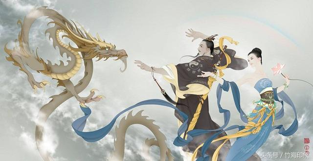
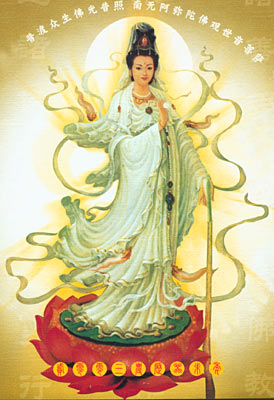
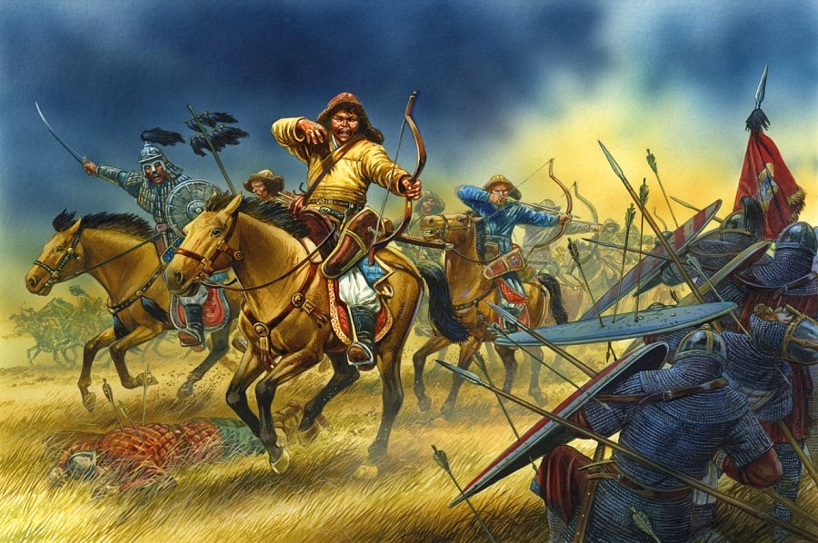

昆仑史曲 第二次天地大戰
十，蚩尤被歼，玄龙遭擒

中原包围圈破不掉，蚩尤大军只好仍然由野三关继续南逃，撤入广西和云南东部地区。
玄女和罗地分手后，由凤凰挥师南下西去。穿越凯里山、龙宫、关岭、碧云洞，直至滇池美人山，封闭了蚩尤军与鸡足山的西洋总部的联系通道。
大罗刹战团也自凤凰一路南下追击蚩尤主力，前军突破九万大山攻到大瑶山。左路切入都阳山。另一路直打到龙州、琼山而进入十万大山西侧，穿插突入联合战团中部将其分割包围。

天锋军驻洞庭湖水军南下至岳莽山，屯兵在大庸西侧的“桃花源”又与大罗山的罗刹守军合兵至云开山，形成了从东面对蚩尤新的合围。
白娘战团沿江西进江汉并直下会理，屯兵在距滇池美人峰、鸡足山和玉龙雪山各二百公里的白云山。与玉龙雪山守军玉龙军，青坛守军龙女军，点苍山守军罗刹军形成了对蚩尤大军包围圈的西面部分。
双方在运动中厮杀，在厮杀中突围和再包围。在大战最激烈时，天地一片混乱。双方在殊死拚杀，各自的预备战团都已投入战局。最后，双方都将十三岁以上 的女兵皆投入征战。在玄龙的花仙大院，只剩下少数十二岁的花仙子驻守，大多数已被征调天龙门作为最后预备队处于紧急待命态，时刻准备冲下三界增援。各路战 场一片混乱。混战的双方已分不清你你我我。只是滚滚尘烟的马队在大荒中奔驰，处处闪现着刀剑的寒光。
玄龙的副帅武陵春在大战后阶段阵亡。
玄女、玄龙大军继续向前战斗进攻，在紫云万峰山与蚩尤主力展开最后决战，并在山南一个叫龙胜的地方歼灭了蚩尤主力。
----直至今日，西洋女王战团为了渡东方古族而阵亡的百万英灵，大都集中在云贵地区、集中在十万大山之中，已经修炼了五千年。大势至娘娘为何也常来过问东方修行之事？因为这里有她史前遗留下来未能撤走的部族。
蚩尤率残部逃到十万大山与云开山之间固守。 正此关键时刻，天界下令停战。圣观音战团及时以“联合国军”身份介入，她制止了对蚩尤残部的围歼和对鸡足山总部的包围战。
九宫娘娘回归九天。东洋各战团撤回湖南地界。

待罗地西出连山时，战事早已平息。他见三、四龙女充任了碧霞元君之职而不见了彩云，大怒，急调他战团中最精锐的波斯大罗刹女战团北上复仇。他率军一 直打到北极，几乎灭了白鲸族。愤怒的西洋女王上奏天庭，状告玄龙停战后还杀生灭族，强烈要求严惩。大日会同三世佛合力擒拿，玄龙抵不过，被压封在玉龙雪山。九宫姐妹见丈夫被压封，一起找三世佛吵闹讨要，甚至摆出九宫阵示威。天王母后见此，说服了姐妹们到天河会上再议再定。大日如来并决定把波斯大罗刹女战 团压封在辽西连山。扣封蚩尤天魂，将蚩尤打入庶民。
| 上 一 頁 | 下 一 頁 | 回 主 頁 |